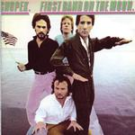

| Artist: | Sigmund Snopek III |
| Title: | First Band On The Moon |
| Label: | Musea FGBG 4417.AR |
| Length(s): | 50 minutes |
| Year(s) of release: | 1980/2002 |
| Month of review: | [08/2002] |
| 1) | First Band On The Moon | |
| 2) | Dr. Alles | |
| 3) | Living Out Loud | |
| 4) | Controller's Reply | |
| 5) | Highway Ghosts | |
| 6) | Avenue Motion | |
| 7) | Let's Take A Trip | |
| 8) | The Armpit Shuffle | |
| 9) | Crazy Crazy Angel | |
| 10) | Ride In The Dark (Robotiko) | |
| 11) | Solalex |
During Living Out Loud, I find out what this band reminds me off: The Sparks. The same goofiness, but without the helium vocals. On this song, the results comes off rather trite, with overmellow choruses.
Controller's Reply is a song off the opera Trinity Seas. Again, some Zappa inspired funkiness with maybe a bit of Crack The Sky in there as well. Again, melodically the music can not captivate me, and the progressiveness to their music on Roy Rogers is also lacking. This is simply rock music, notwithstanding the scatting.
Highway Ghosts brings in a bit of melody. The swirling keys, the reserved, but melodic vocals. A somber feel pervades this song which might be likened to Symphonic Slam. Hammered piano, rowdy vocals, it is all in all a rather slow moving piece, but I like it. Later on, the vocals of Betsy Kaské are added for variation. Then the music gets a bit louder and more psychedelic, but also with a classical rings at times as well.
On Avenue Motion, we bounce back pastiche like to sixties or even before. Think 10CC here. All in all, too careful, too conceived and lacking in spark. Let's Take A Trip continues the line of the album. You might be reminded of Steely Dan here. The end is up-beat guitar. The Armpit Shuffle continues with rather lame humour. Maybe I am not in the mood for this right now, but I hear this 25 years late. I certainly prefer 10CC's Wall Street Shuffle.
Crazy Crazy Angel is the longest track on this album. Like many of the other tracks, this song seems to be written to be performed on stage within the context of a rock opera. Again, nothing really much progressive about this. The melody is okay, the vocal performance is quite good as well with the singer ranting halfway.
Ride In The Dark (Robotiko) is a track also known from Roy Rogers, where it is part of a 35 minute track. It is a pleasant and memorable instrumental. Solalex is the closer of the album. It opens repetitively, minimal in the style of Steve Reich even. The continuation is very soothing, especially the vocals which are almost like a lullabye. A nice track.